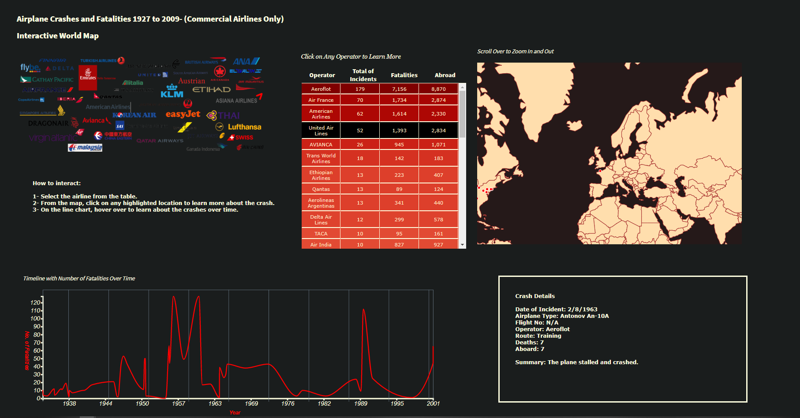

Project Reflection
Exploratory Theme About Airplane Crashes and Fatalities
For the exploratory theme, I drew 4 different visualizations and made them work together interactively. The project consists on an interactive map and timeline controlled by the user selection from the airline’s table. When clicking on the desired airline the incident location updates , and the user can start exploring. On the map when selecting one incident, a summary of that specific crash appears enabling the user to learn more about it.
Github Repository
Preview Video
Sketch
Narrative theme about Important Facts About Airplane Crashes
This narrative is a follow up of the exploratory theme introducing important facts you should know about airline crashes. The narrative is broken down in 4 sections: Top 60 locations with accident occurrences, top 20 plane operator involved in accidents, fatalities over time - 1972 the deadliest year, and causes of fatal accidents by dacede.
Github Repository
Preview Video
Sketch